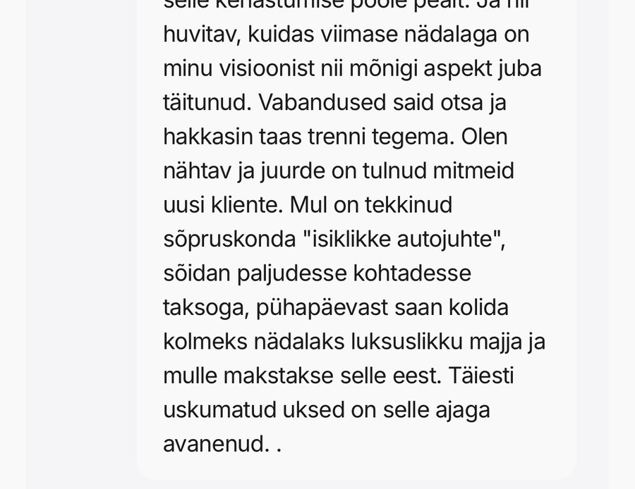
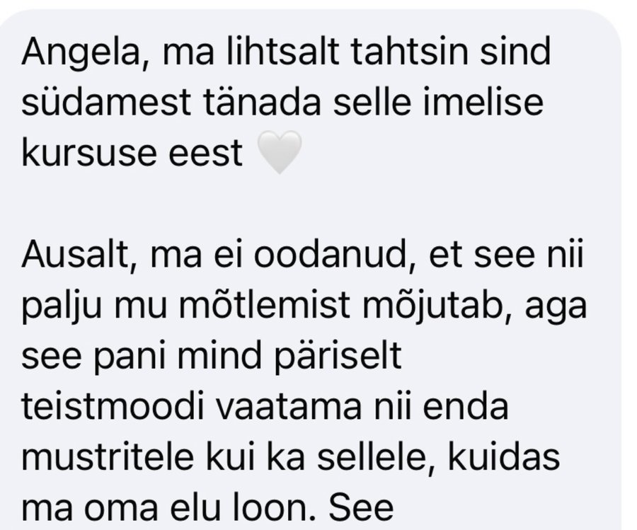
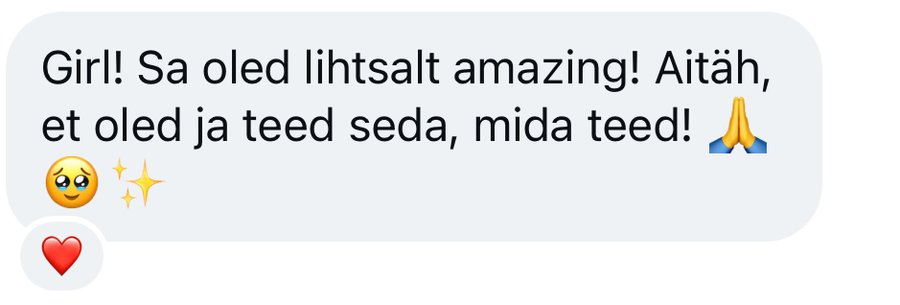
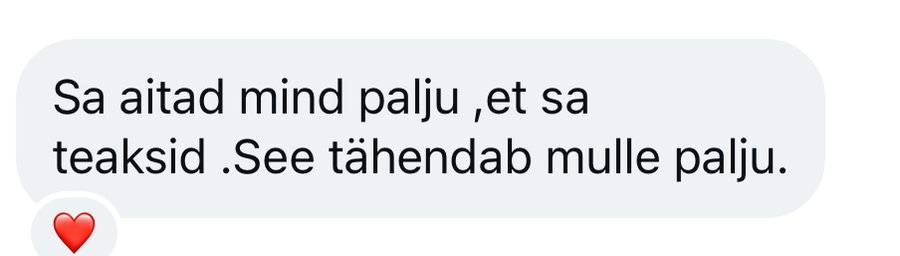
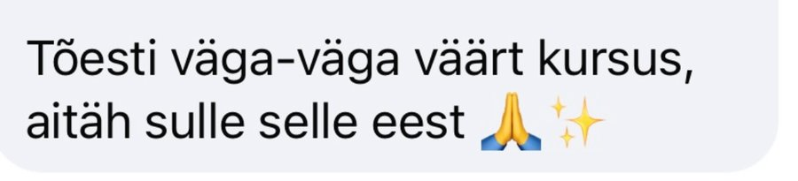
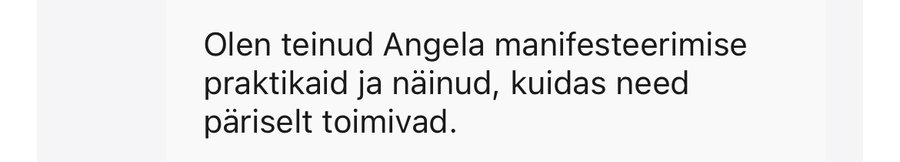

21-PÄEVANE VÄLJAKUTSE · 16.11–06.12
Afirmatsioonid. Podcastid autos. Journal öökapil.
Ja ometi ärkad iga hommik samas elus.
21 päeva, et öelda head aega sellele vanale skriptile, mis on seni sinu elu juhtinud.
GIRL, LET'S BE REAL.
Klõpsa lahti ja loe kokku, mitmes neist sa ennast ära tunned.
Sinu unistuste elu on telefoni taustapildil. Sinu tegelik elu on sama hommik, sama korter, samad vestlused. Ja iga jaanuar lubad, et „sel aastal on teisiti“.
Palgapäeval tunned kergendust. Nädal hiljem on sama ärevus tagasi. Iga lisaeuro kaob kuhugi, nagu poleks sul lubatud seda hoida.
Kirjutad hinnapakkumise või palgatõusu kirja. Kustutad. Kirjutad uuesti, natuke väiksema numbriga, „et keegi ära ei ehmuks“.
Uus inimene, uus algus, uued lootused. Ja kolme kuu pärast tunned jälle, et pead armastust välja teenima. Sa hakkad mõtlema, kas probleem oled sina.
Sinu plaanid kolivad alati, kui kellelgi teisel on sind vaja. Ja siis imestad, miks tema eelistab laupäeva õhtul videomänge sinuga kohtingule minekule. Miks kliendid tühistavad viimasel minutil.
Salvestad Reelsi, vaatad üle, kustutad. Postitad, ja siis vaatad iga tunni tagant, kes seda nägi. Üks vaikne päev ja kogu enesekindlus on kadunud.
Kolm kohtinguäppi. Hommikurutiin. Raamatud, kursused, journaling. Sa oled teinud rohkem enesearengut kui keegi su sõpradest. Ja ometi tundub, et mitte miski ei muutu.
Kui olen kaalust alla võtnud. Kui mul on rohkem raha. Kui hirm läheb üle. Kui elu rahuneb. Siis alustan. Ja see „siis“ ei tule kunagi.
Kerid Instagramis ja vaatad, kuidas teised elavad elu, mida sina tahad. Naised, kellel on pool sinu andest, saavad kaks korda rohkem. Ja sa ei saa aru, mis neil on, mida sul pole.
Üks hea päev ja tunned, et suudad kõike. Üks vastamata sõnum, üks kommentaar, üks pilk peeglisse ja oled tagasi alguses.
„Aga mis siis, kui minu elu ongi lihtsalt selline?“
Afirmatsioonid. Visualiseerimine. Sa tead teooriat paremini kui enamik. Aga midagi sügavamal juhib endiselt sinu elu.
WHAT THE MANIFESTATION WORLD ISN'T TELLING YOU
Manifesteerimise maailm õpetab sulle, kuidas soovida. Selgemalt, suuremalt, rohkem tunnetega.
Aga keegi ei õpeta sulle, mida teha, kui sinu soov ütleb üht ja sinu sisemine skript teist.
Sest skript võidab. Iga kord.
Las ma näitan, kuidas see minul välja nägi.
Kui olin 15, sain taskuraha ja kulutasin selle kohe ära. Ema küsis, kus raha on, ja sellest tuli pingeline vestlus. Tühine hetk, eks?
Aga mu aju salvestas sellest reegli: raha on miski, mis kaob. Kui sa seda saad, kaotad selle kohe ja saad haiget.
See reegel töötas vaikselt taustal veel aastaid. Ma ei teadnudki, et see seal on, kuni hakkasin oma valikuid päriselt vaatama. Alles siis, kui ma seda märkasin, sain hakata seda muutma.
Sinu aju ei näita sulle maailma sellisena, nagu see on. See ennustab, mis juhtub, selle põhjal, mida sa oled varem kogenud. See filtreerib välja suurema osa infost ja laseb läbi selle, mis sobib sinu uskumustega.
Täpselt nii töötab ka „ma pole piisavalt hea“. Ja „raha kaob“. Ja „mind jäetakse maha“.
HOT GIRLS MANIFESTIS NIMETAME SEDA
LOOMISVÄLJAKS
Sinu uskumused, identiteet, mõtted, emotsioonid ja teod. Kõik need koos on skript, mille järgi sa iga päev elad.
See skript otsustab, mida sa märkad, mida küsid, millega lepid, milliseid piire sead ja milliseid võimalusi üldse näed. Ning seega ka seda, kuidas maailm sulle vastab.
Seepärast tuleb erinev partner sama tundega. Seepärast kaob raha. Seepärast läheb soov kaugemale, mida rohkem sa tahad.
Hea uudis on see, et sina kirjutasid selle skripti. Teadmata, aga sina. Järelikult saad sa kirjutada ka uue.
Ja selleks on vaja kolme asja: näha vana skripti, otsustada, milline on uus, ja hakata seda iga päev elama. Just seda need 21 päeva teevadki.
„Aga ma tahan lihtsalt manifesteerida. Miks ma pean oma uskumusi lahkama?“
Sest sa ei saa hoida midagi, mis läheb vastuollu sellega, kes sa enda arvates oled. Kui su skript ütleb „raha kaob“, siis isegi kui raha tuleb, leiab see tee välja. Kui skript ütleb „mind jäetakse maha“, siis ka õige inimene tundub ohtlik. Uskumuste muutmine ei ole manifesteerimise asemel. See ON manifesteerimine.
„Kas see tähendab, et kõik halb minu elus on minu enda süü?“
Ei. Ja see on oluline. Teiste inimeste halb käitumine on nende oma, mitte sinu oma. Me ei otsi süüdlast. Me otsime sinu võimu: seda osa, mida SINA saad muuta, mida sa lubad, millega lepid ja kuidas vastad.
„Kas ma pean enne ennast täielikult terveks tegema, et midagi head oma ellu luua?“
Ei. Sa ei pea ootama, kuni tunned end enesekindla, küllusliku või väärtuslikuna. Kehastamine on valik, mitte tunne. Sa saad valida juba täna nagu naine, kelleks sa kasvad.
„Kas see on jälle „mõtle positiivselt ja oota“?“
Vastupidi. Loomine ei ole ootamine. Sisemine töö on vundament, aga maja ehitatakse tegudega.
THE QUESTION YOU NEED TO ASK YOURSELF
Sulge korraks silmad. Aasta on möödas.
ESIMENE NOVEMBER
Sa räägid sõbrannaga samal teemal, millest rääkisid aasta tagasi. Sama mees või sama tüüpi mees. Sama töö, millest sa „iga hetk“ lahkud.
Sinu idee, millest sa nii elevil olid, on ikka märkmikus. Keegi teine tegi sarnase asja ära ja sa vaatasid seda Instagramis.
Reede õhtul vaatad Love Islandit ja mõtled, miks kõigil teistel on armastus nii lihtne.
Uus aasta tuleb. Sa kirjutad uued eesmärgid. Need on peaaegu samad mis eelmisel aastal.
Ja see kõige valusam osa: sa tead, et oleksid saanud. Sa lihtsalt ei alustanud.
TEINE NOVEMBER
Sa saatsid selle hinnapakkumise, mida kartsid. Täis hinnaga. Ja klient ütles jah.
Sa postitad Reelsi esimese võttega ega vaata iga tunni tagant, kes seda nägi.
Sa lähed kohtingule teadmisega, et ka sina valid, mitte ei oota, kas sind valitakse.
Kui keegi tühistab viimasel minutil, ei hakka sa endas põhjust otsima. Sa lihtsalt ei kohanda enam oma elu selle järgi.
Palgapäeval tead, mida raha tegema hakkab. Ja see ei kao.
Sa märkad, kui vana hirm tahab sinu eest otsustada. Ja sa oskad vahet teha hirmul ja intuitsioonil.
Sa pole perfektne. Sul on endiselt halbu päevi. Aga sa ei ela enam autopiloodil.
Mõlemad naised alustasid täpselt samast kohast. Sellest hetkest, kus sa praegu seda lehte loed.
Ainus vahe on see, mida nad sel hetkel otsustasid.
MA VALIN TEISE NOVEMBRI →IMAGINE THE UPGRADE
Sa lõpetad kõrvaltegelase mängimise oma elus.
Sa ei aja enam heakskiitu taga.
Sinu enesekindlus ei sõltu enam sellest, mis päev on.
Sa sead ennast esikohale ilma süütundeta, ja teised hakkavad sama tegema.
Sa küsid seda, mida väärt oled, ilma vabandamata.
Sa ei pea enam armastust välja teenima.
Sa tead täpselt, mida tahad, aga ei klammerdu selle külge.
Sa ei oota enam, kuni oled „valmis“.
Sa usaldad oma sisetunnet.
Sa ei tarbi enam lihtsalt enesearengut. Sa elad seda.
Sa tunned lõpuks, et see on SINU elu, mitte kellegi teise ootuste elu.
WOMEN WHO'VE BEEN THERE
Sõnumid HGM väljakutse ja minu kursuste osalejatelt. Sa ei pea uskuma ainult minu sõnu.






INTRODUCING
See ei ole veel üks väljakutse, kus sa kuulad 21 päeva inspireerivat juttu ja jätkad siis samamoodi.
See on sinu vundament. Kolm nädalat, mis viivad sind vana skripti nägemisest uue elamiseni. Iga nädal annab sulle tööriistad, mida kasutad kohe oma päriselus.
NÄDAL 1
See your script
NÄDAL 2
Become her
NÄDAL 3
Create it
THIS IS YOUR SPACE, GIRL
01
Privaatne HGM kogukond
Naised, kes ei lase sul vanasse skripti tagasi vajuda.
02
3 Q&A-d Angelaga
Kord nädalas, kus saad küsida oma olukorra kohta.
03
Iganädalased videomaterjalid
Samm-sammult läbi teadliku loomise vundamendi.
04
Harjutused ja refleksioonid
Sest muutus ei tule kuulamisest, vaid tegemisest.
21 € ehk 1 € päevas.
Võrdle seda hinnaga, mida maksad iga aasta, kui elad edasi vana skripti järgi.
Väljakutse on HGM-i vundament. Neile, kes tahavad pärast seda maja edasi ehitada, avaneb jaanuaris HGM kogukond. Aga see on sinu valik, mitte kohustus.
MEET YOUR GUIDE
Poolteist aastat tagasi salvestasin oma esimese video. Ma kartsin, mida inimesed arvavad. Iga vana skript minus karjus, et jäta see postitamata.
Ma postitasin.
Täna on mul üle tuhande naise kogukond ja ma elan elu, millest kunagi ainult unistasin. Mitte sellepärast, et hirm kadus, vaid sellepärast, et lõpetasin laskmast tal otsustada.
Olen üle kuue aasta õppinud manifesteerimist, universumi seadusi ja neuroteadust ning olen intuitiivse töö väljaõppel. HGM on kõige selle kokkuvõte: teadus, mis selgitab, ja spirituaalsus, mis annab sügavuse. Ilma woo-woota.
Ma ei taha, et sa tarbiksid minu õpetusi. Ma tahan, et sa õpiksid ise oma elu looma.
Unistuste elu ei ole valitutele. See on neile, kes selle ise valivad.
IS THIS YOU?
YOUR QUESTIONS, ANSWERED
Jätka sealt, kus pooleli jäid. Perfektsus ei ole eesmärk. Eesmärk on, et sa ei loobuks.
Ei. Alustame põhitõdedest. Kui oled aastaid manifesteerinud, näed tuttavaid asju täiesti uue nurga alt.
Pärast ostu saad Stan Store'ilt ingliskeelse e-kirja. Kui seda kohe ei tule, vaata ka rämpsposti ja kampaaniate kausta. Vajuta kirjas olevale nupule ja loo konto sama e-postiga, millega ostsid. iPhone'is saad kogukonda kasutada äpis „Stan Community“, Androidis avaneb see brauseris samast kirjast. Kogukonna tervituspostitusest leiad ka lingi WhatsAppi teavitusgruppi, kuhu tulevad kõik olulised uudised.
Väljakutse toimub Stan Store'i platvormil. Kogu sisu jääb sulle vaatamiseks kuni 2026. aasta lõpuni.
Sest selle eest, mille eest sa maksad, tuled sa ka kohale. Tasuta asju alustatakse, tasulisi tehakse lõpuni. 1 € päevas on piisav, et see oleks päris otsus, ja piisavalt väike, et see ei saaks takistuseks.
THIS IS YOUR SIGN, GIRL.
Ja lubada endale, et alustad siis, kui oled valmis. Jaanuaris. Kui on rohkem aega. Kui hirm on läinud.
Aga sa tead juba, kuhu see viib. Sa oled seal olnud.
Või sa võid täna teha midagi, mida vana sina poleks teinud.
See maksab 1 € päevas. Halvimal juhul investeerisid 21 päeva ja 21 eurot iseendasse. Parimal juhul on see päev, millest sa aasta pärast räägid: „Sealt see kõik algas.“
Ma ei taha enam vanaviisi.
JAH, MA VALIN ENNAST →16.11–06.12 · 21 päeva · 21 €
Hot Girls don't wait for permission. They create.